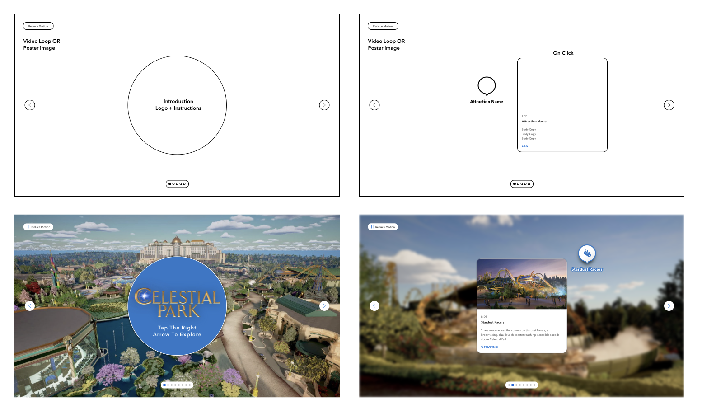
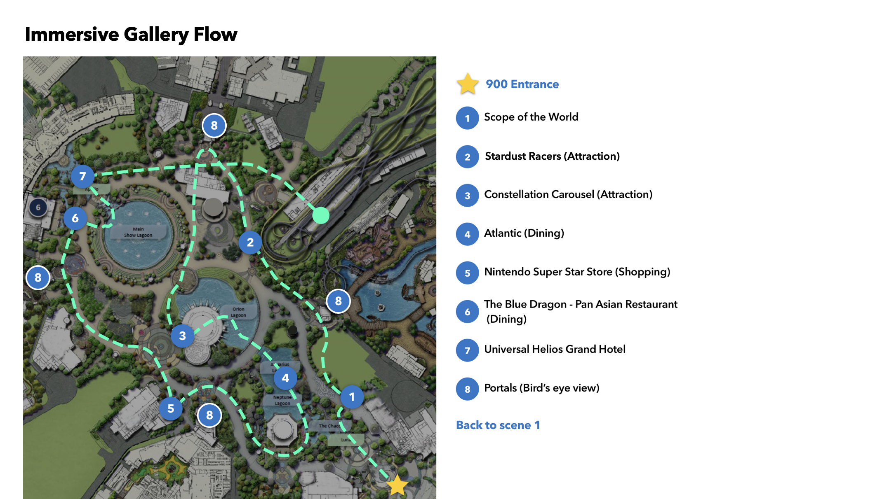
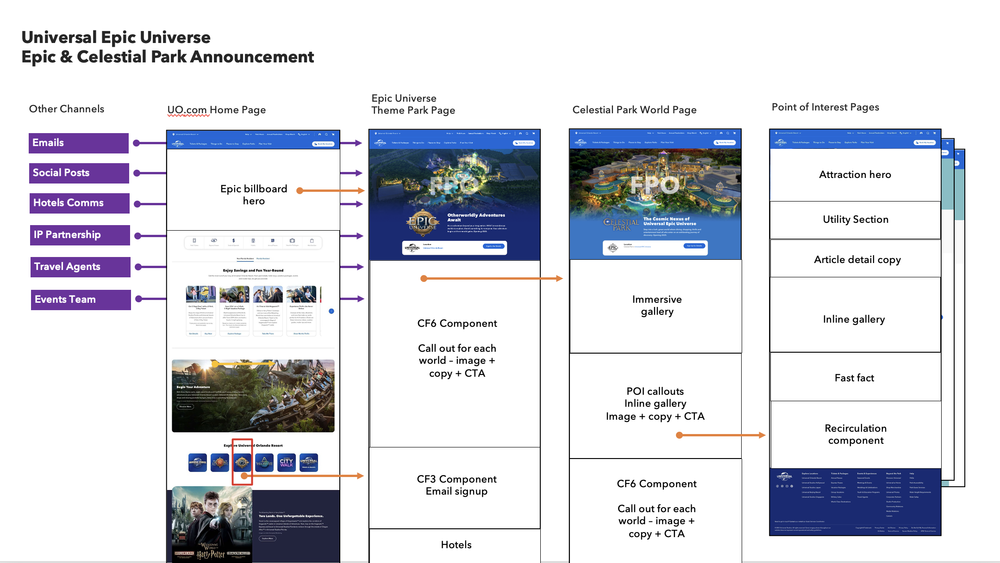
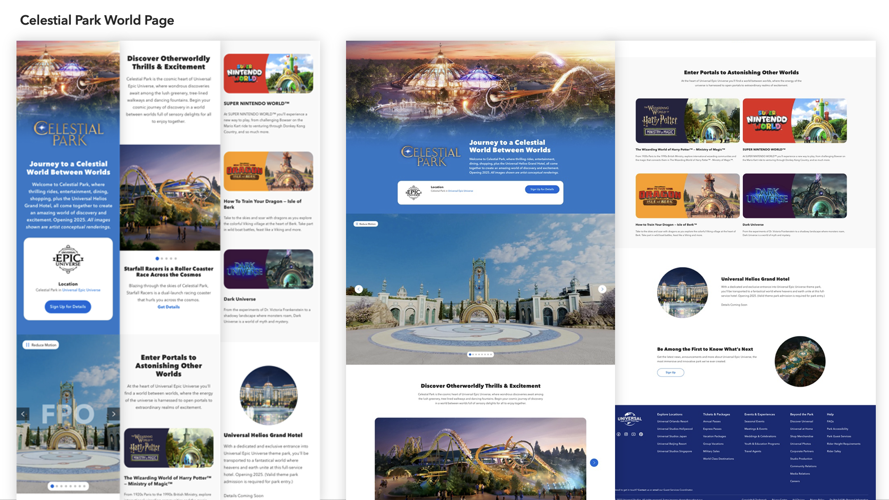
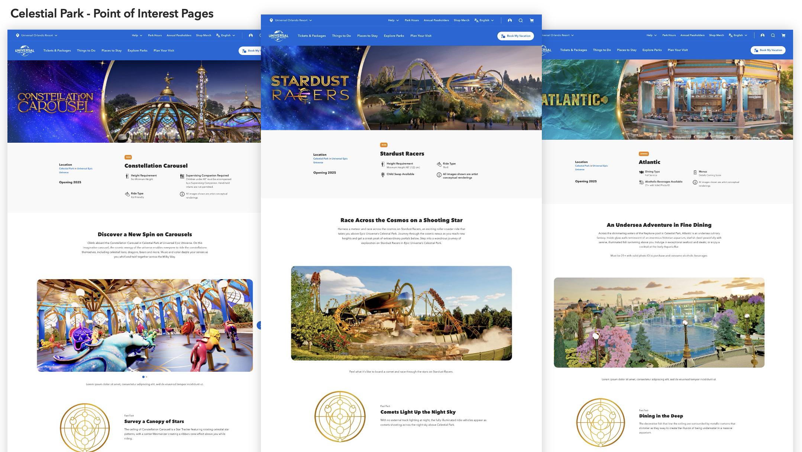

The Project
Over 18 months, I worked alongside designers, developers, eCommerce specialists, art directors, and stakeholders on the launch campaign across web, mobile, and email. This case study focuses on our first release: introducing Epic Universe and Celestial Park on the Universal Orlando website and mobile app.
The design challenge was to establish a visual language for the new park within Universal’s existing brand and Global Design System. The experience needed to introduce unfamiliar places to first-time visitors while giving superfans and Annual Passholders enough detail to explore. One of our most distinctive solutions was an immersive gallery that combined images with navigable video tours.
Designing the Immersive Gallery
The immersive gallery required a new component within our Global Design System. A conventional image gallery could introduce the park visually, but we wanted guests to explore the spaces through an interactive experience.
We combined an image gallery with video tours that guests could navigate, giving them a way to explore the park’s spaces before visiting.
I worked with the wider design team, Global Design System team, developers, and our UX researcher on the gallery experience. Together, we worked through bandwidth, accessibility, and usability considerations as the component progressed from wireframes to final designs.

The physical park was still under construction, so we could not use the finished spaces as a reference. Our team worked with Universal Creative’s park designers and architects and an external 3D modeling vendor to create the fly-through videos. Together, we mapped flight paths and art directed the look and feel of the tours.

Establishing a Web Presence
Introducing Epic Universe meant finding a place for a new theme park within an established website and mobile app. We worked with marketing and stakeholder teams to define where the content would appear and how guests would reach it from other digital channels.
Our mockups and user flows showed how guests could move from existing Universal content into the new Epic Universe experience.

We developed the Epic Universe theme park page, world landing pages, and pages for attractions, dining, and shopping. For this release, the focus was Celestial Park. Working with marketing partners, we shaped the content, tone, and calls to action to help guests learn about the park and plan a visit.


Shared Launch Results
The digital experience was part of a broader launch campaign across web, email, social media, and publicity. In the first 24 hours, Universal Orlando’s website received 2.1 million page views and 409,000 unique visitors. Of those visitors, 60% engaged with Epic Universe content. The launch also generated 9,700 email signups, with 94% coming from the dedicated Epic Universe signup page.
Across Universal Orlando’s social channels, the broader campaign generated more than 10.2 million impressions and 913,300 engagements during the same 24-hour period. These figures reflect the combined work of the teams involved in the launch.